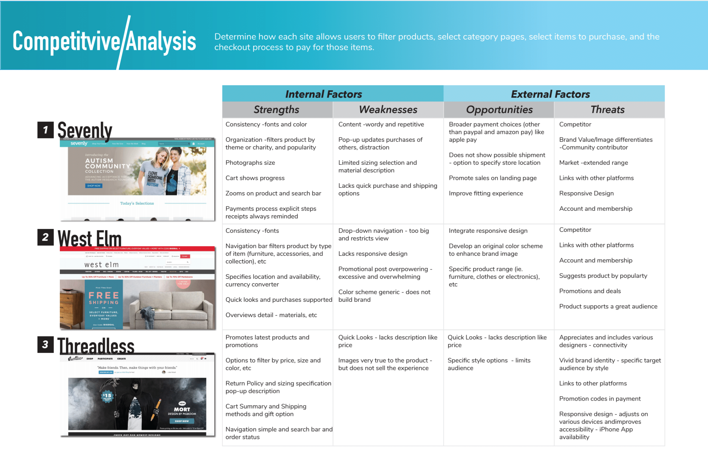

Understanding the market is essential for a new platform, especially with features that are similar to others. As an E-commerce website, Haya’s competitors included applications or brands like Zalando, Zara, Dolls Kills, and Urban Outfitters.

Inspired by ‘AirBnB’s activity search system as well as Topshop’s in-store personalized shopping experience, personalization were constructed by the “Adventure” feature. The personas challenged a specific investigation in the different types of teens, in order to build a personalization feature within the site. With personalization comes comfort; whilst introducing a new contrsuct to the generic build, the feature adds the demanded ‘adventure-like’ sensation. The chosen themes or “Adventures” are: The Climb, Concrete Jungle, and Ocean Bliss. After many interview sessions, it is noted that the targeted users of teenagers are excited by a sense of adventure and fear to miss out on trendy experiences. This perspective led to the name “Haya” which in Hebrew and Arabic translates to Alive and/or Life, which captures the experience offered by the site. The name further foreshadows the site’s lifelike experience through a personalization feature that gives users the option to shop within their choice of “life Adventure”. Once an adventure is selected, the user is redirected towards a specific page that features trends and recommended styles of the selected theme - continuing the key of personalization. Additional differentiation feature lies within the site’s “trends” page that offers users to browse through trending outfits and offers them a chance to mimic the photographed outfit.